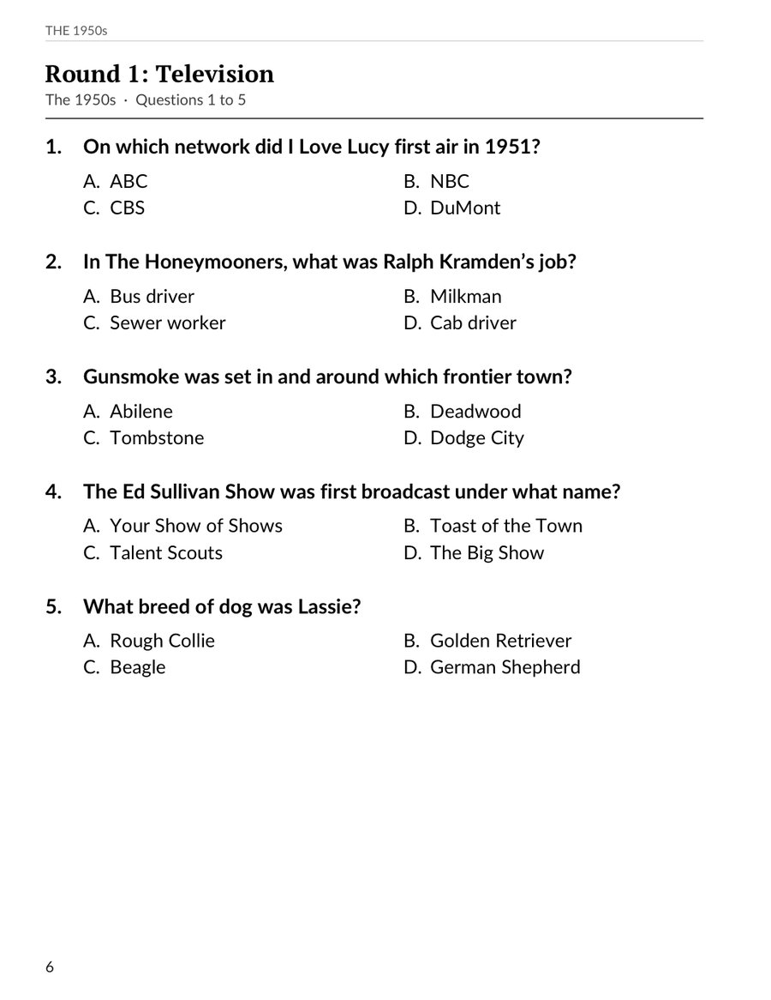
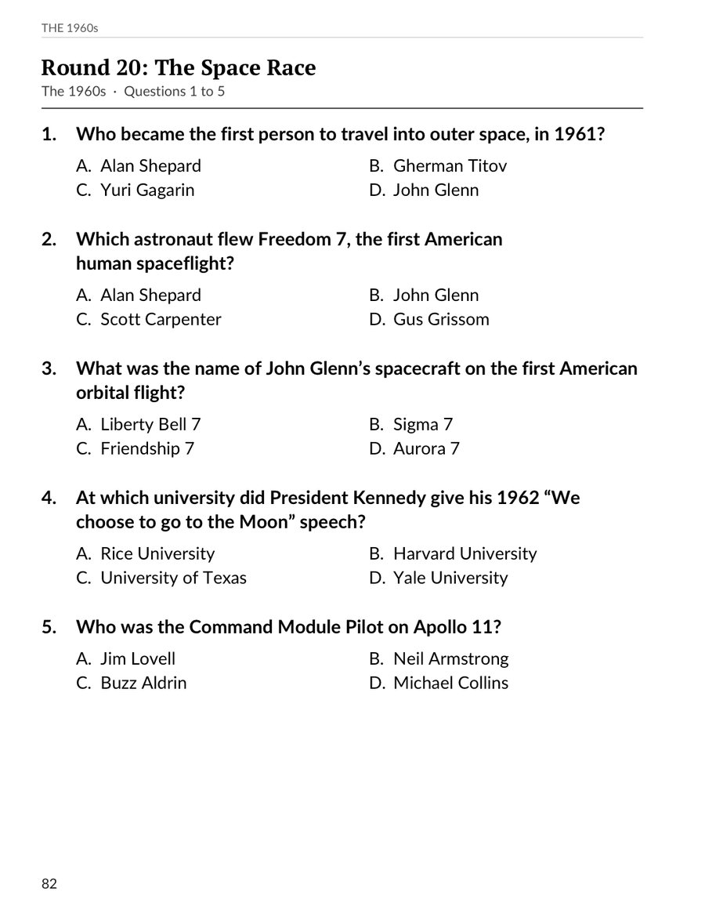
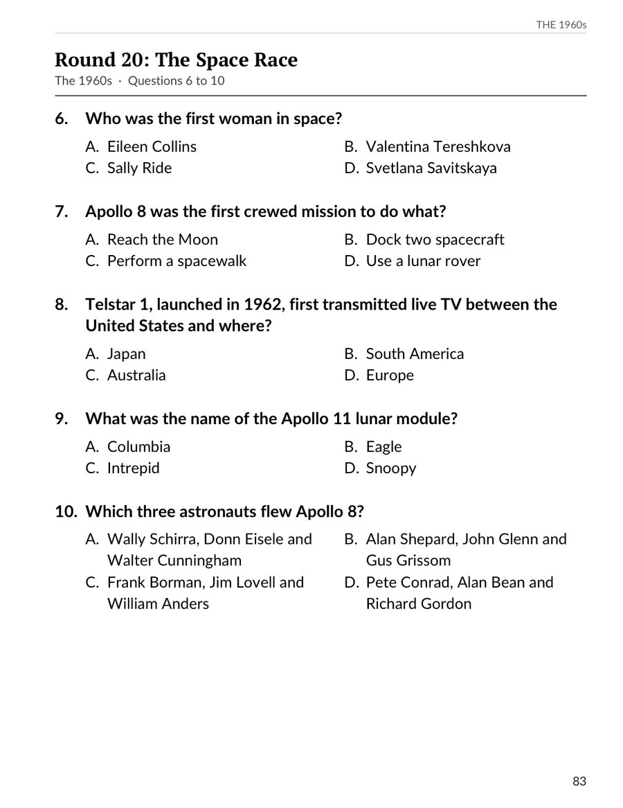
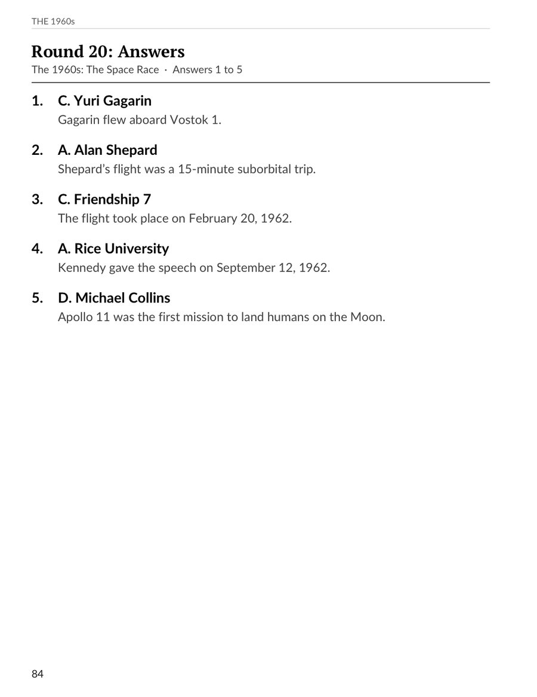
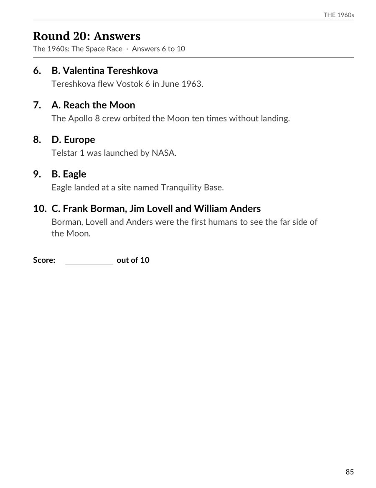
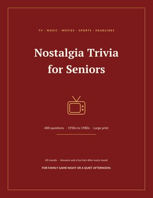
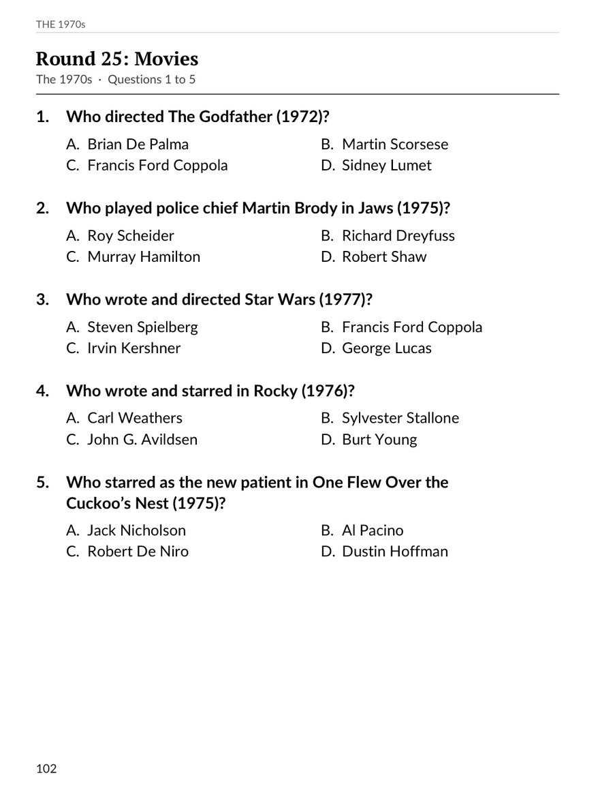
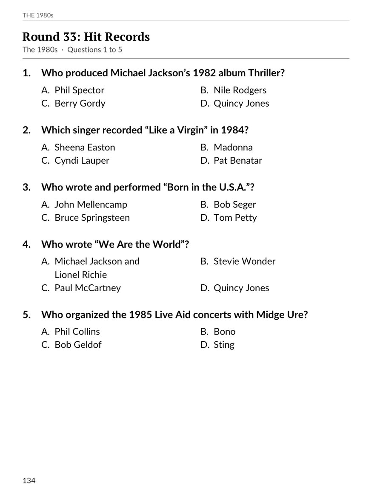

Large-Print 1950s TV Trivia Quiz with Answers
From the Nostalgia Trivia for Seniors
Round 20 from Nostalgia Trivia for Seniors, with its answer pages. Ten multiple-choice questions on the 1960s Space Race in large print, and a fun fact with every answer.





Four hundred multiple-choice questions on the television, music, movies, stars, sports, headlines and everyday life of the 1950s, 60s, 70s and 80s, in large, easy-to-read print. Read them aloud at a family table, play in teams, or work through a round on your own.
Outside the US: Amazon UK · Amazon Canada · Amazon Australia

From the Nostalgia Trivia for Seniors

From the Nostalgia Trivia for Seniors

From the Nostalgia Trivia for Seniors